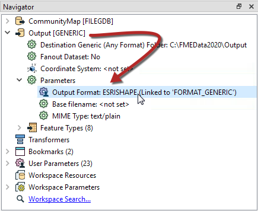
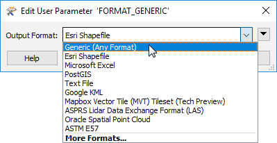
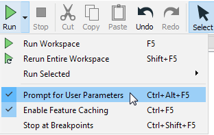

Click on the Green plus sign then select Choice.

On the right-hand side fill in the following parameter properties:
After completing this unit, you’ll be able to:
In a recent project, you had to compile a list of customers to notify that were affected by a water pump failure. After the list was compiled, the customers were manually notified. In anticipation of an event similar to this in the future, you would like to publish the workspace to FME Server to share with your colleagues, modify the workspace to accept an updated file, as well as automate it, so the workspace runs on a schedule.
In this exercise, you will create user parameters before publishing the workspace to FME Server.
Note that this video was created with FME Server 2019.0; the interface varies in other versions of FME.
Open starting workspace in FME Workbench (2022.0 or later).
Look at the Navigator window. This workspace uses a Generic writer, which can write to any FME-supported format.
In the Navigator window, expand the Generic writer by clicking the arrow to the left of it, then expand Parameters.

Currently, the default format is set to Esri Shapefile. But, the goal for this exercise is for the user to select the format of their choice from a small list, at run time. This step is accomplished with published parameters.
Double-click the Output Format parameter, which shows that it’s been set up so the user can select from any format.

But that’s not what we want. The goal is to present the user with a list of four common formats. So, we will create a new user parameter and define it accordingly.
In the Navigator window, right-click on User Parameters and select Manage User Parameters.
Click on the Green plus sign then select Choice.
On the right-hand side fill in the following parameter properties:
| Parameter Identifier |
Output_Format |
| Prompt |
Enter an output format: |
| Published |
Enabled |
| Required |
Disabled |
| Disable Attribute Assignment: |
Enabled |
| Choice Configuration |
Drop-down |
Then for Choices enter the following:
| Value | Display |
| SHAPEFILE | Esri Shapefile |
| MITAB | MapInfo TAB |
| GML | GML |
Then select Esri Shapefile as the default value and click OK.
Our new Output_Format parameter appears under User Parameters > Published Parameters, but we still have to link it to the Generic Writer’s Output Format parameter. Locate the Output [GENERIC] Writer, and expand it with the arrow to view the Parameters, the first one being Output Format. Right-click on Output Format, select Link to User Parameter.

Select the new Output_Format parameter we just created.

Click OK.
If you run the workspace immediately, it will use the default value and output an Esri Shapefile. However, if you select Prompt for User Parameters then click Run, you will be prompted to choose the output format. Notice only those three formats are presented now in the drop-down list. Pick GML. The workspace runs successfully.

Now let’s set up the workspace so the user gets to choose which feature types they want to request.
In the Navigator, expand the CommunityMap [FILEGDB] File Geodatabase Reader > Parameters > and double click Features to Read. This parameter lets the user decide which feature types to process when the workspace runs. Close the dialogue.

Right-click on Feature Types to Read parameter and select Create User Parameter. Go with the defaults for the definition, and click OK. Confirm the new parameter appears under Published Parameters.

Ensure that Prompt for User Parameters is still enabled and rerun the workspace.
Notice that this time there are two parameters to set. Set it to whatever parameters you wish, and then click Run. Confirm that the workspace runs correctly.

Now that we have the parameters set up and confirmed that the workspace runs correctly, we can publish it to FME Server.
Before publishing, save the workspace. Once saved, go to File > Publish to FME Server on the top menu bar.
Connect to your FME Server and publish to a repository called Training. Call the workspace CommunityMapping.fmw. Register it with the Data Download and Job Submitter services.
Open and log into the FME Server Web User Interface.
On the side menu bar in FME Server, click on Run Workspace. On the Run Workspace page, select Training for the Repository and the CommunityMapping workspace. Select Data Download for the Service.
Check out the Published Parameters. The two parameters that were set up and just tested in FME Workbench are shown. Just as before, select an output format, and select one or more feature types.

Once you have selected the parameters, click Run.
The Data Download service presents a URL link to the translation results in a zip file. A quick inspection of the contents of the zip file confirms the results are what we expected.